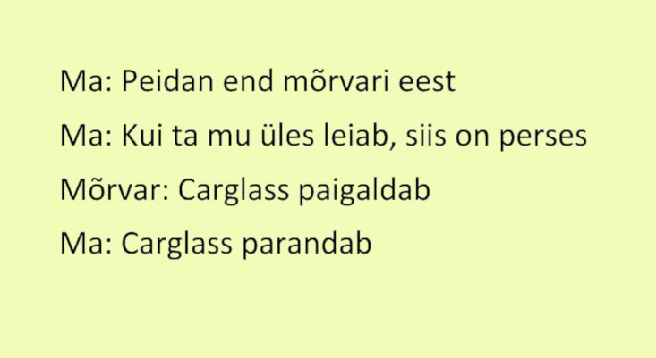
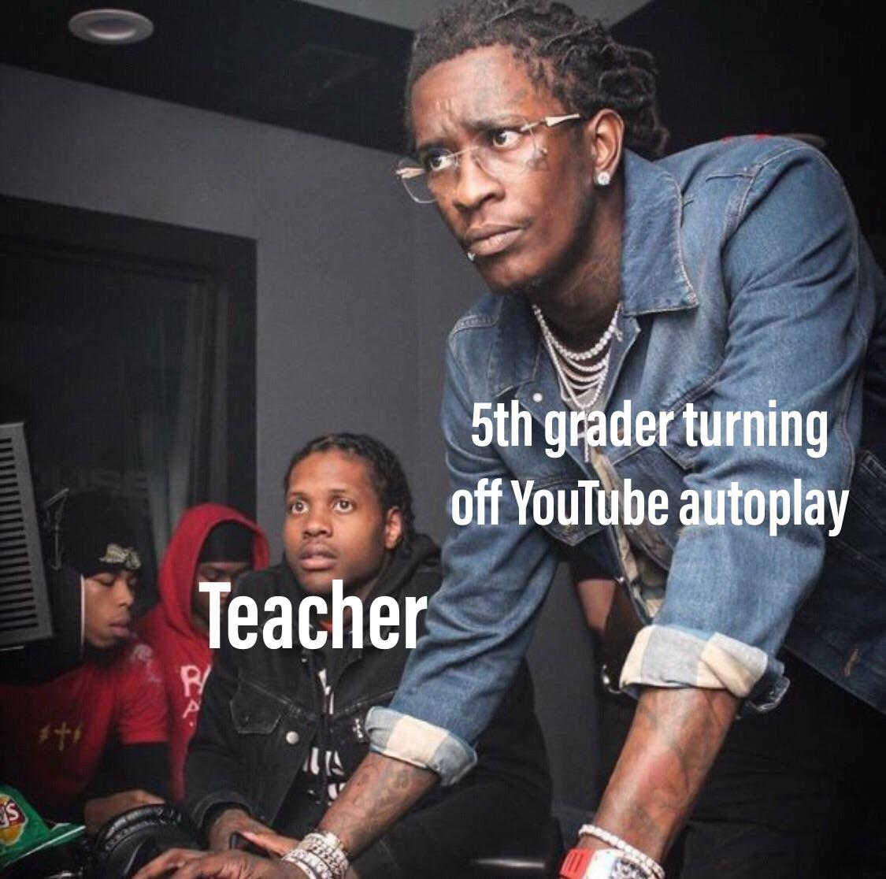
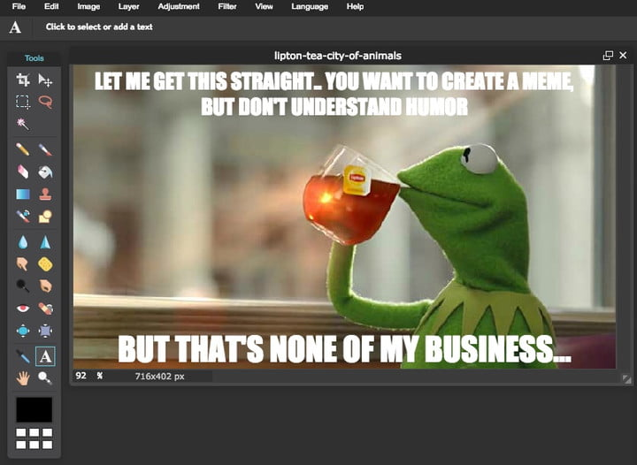

Meem on idee, tava, kujund vms infokogum, mis inimkultuuri keskkonnas valdavalt imiteerimise
teel levib, paljuneb ja muteerub. Meemideks võivad olla mõtted, ideed, teooriad, harjumused, laulud, tantsud jms.
Meemi on Dawkins oma meemiteoorias piltlikult nimetanud ka mõistuse viiruseks, mis kultuuris end kordab ja paljundab
ning mõjutab inimeste käitumist. Üldkasutuses tähistab meem eelkõige internetis jagatavat ja imiteeritavat
humoorikat pildimakrot või videot. Tuntumate näidetena võib välja tuua "Here come dat boi" ja "Salt bae" tüüpi
internetimeemid.
Meemi mõiste (inglise k meme) võttis kasutusele Richard Dawkins 1976. aastal ilmunud raamatus
"Isekas geen", oletades, et meem on kultuuris samasugune põhielement nagu geen bioloogilises pärilikkuses. Dawkinsi
järgi on inimestele omane teatav kohanemismehhanism, mis puudub teistel liikidel – lisaks pärilikkusainele on
inimestel võimalik edasi anda oma ideid, mis võimaldab neil muutustega märksa kiiremini kohaneda, kui see oleks
võimalik üksnes bioloogilise pärilikkuse ja loodusliku valiku abil. Mõned meemid on kultuurilises valikus teistest
edukamad ja püsivamad, teised hääbuvad suhteliselt kiiresti.Meemide olemuse ja levimise ning infolevi
evolutsiooniliste mudelite uurimisega tegelevat teadust nimetatakse memeetikaks.
Dawkinsi kasutusele võetud mõiste „meem“ on populaarses käsitluses selle algsest tähendusest
lahti monteeritud ning kasutusse läinud teatud tüüpi internetihuumori tähistajana. Nii on see ringiga tagasi jõudnud
ka internetti uurivatesse distsipliinidesse. Segaduse vähendamiseks ja Dawkinsi ideoloogilise pagasi maha
raputamiseks on akadeemilises diskursuses lisatud mõistesse internet ning nii käsitletakse uurimustes
internetimeeme.Internetimeeme nähakse kui Web 2.0 ja jagamiskultuuri ilmestavad nähtust – nende jagamisele
orienteeritus, kopeeritavus ja osaluslikkus loomisel on osalusmeedia kesksed parameetrid. Internetimeemid
peegeldavad ja kujundavad seega üldiseid sotsiaalseid arusaamu ja suundumusi. Samuti on välja toodud poliitiliste
internetimeemide mõjukus ühiskonnas, mis loob võimalused aktiivseks kodanikuliikumiseks ja annab meemidele
identiteediloomelise potentsiaali.

Internetimeemide loomise protsess
1. Tea oma meeme
Uuri internetis ringi ja vaata teiste inimeste poolt tehtud memesid. Nad võivad anda sulle inspiratsiooni ning
informatsiooni selle kohta, millised meemid on praegusel ajal populaarsed ning kas sinu ideid on juba teostatud.
Lisaks jäta meelde, millised meemid sind ennast kõige rohkem naerma ajavad. Populaarseimad meemileheküljed on
näiteks Reddit ja Imgur.

2. Meemi sisu
Nüüd pead otsustama, kas soovid luua täiesti uut meemi või kasutada olemasolevat formaati. Tihtipeale on meemidel
olemas originaalpilt, mis on ilma teksti ja muudatusteta. Seda kasutades saad luua täiesti oma versiooni sellest
meemist. Originaalpilte on kõige lihtsam otsida otsingumootoritest näiteks Google ning mõni kord on meemi juurde
kirjeldusse jäetud originaalpildi allikas. Tavaliselt loetakse seda halvaks tavaks, kui meemi tehes kasutatakse
teemasid, mis on ebaoriginaalsed ning juba moest läinud.
Kõige paremad meemid on lihtsad ja löövad, sest need on kõigile arusaadavad ja neisse ei pea liigselt süvenema.
Küll on ka meeme, mis on mõeldud kindlatele sihtgruppidele ning millest kõik aru ei saa.
3. Loo enda meem
Kõige lihtsam on meeme teha kasutades veebipõhiseid meemigeneraatoreid või telefonirakendusi. Üheks veebileheks on
näiteks Imgflip, millega on väga lihtne pilte redigeerida. Küll aga
saab kasutada ka pilditöötlusprogramme nagu Adobe Photoshop, mis annab kasutajale palju rohkem võimalusi meemide
loomiseks.

4. Jaga oma meemi
Nüüd kui sul on oma meem valmis, jaga seda teistega, kasutades erinevaid sotsiaalmeedia kanaleid nagu Reddit,
Facebook, Instagram jne.